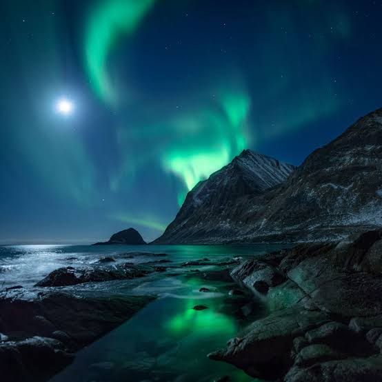
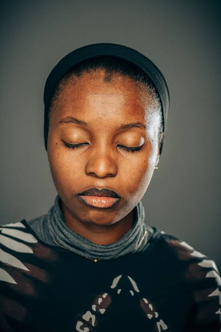
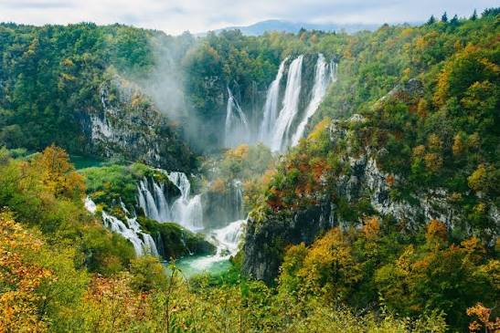
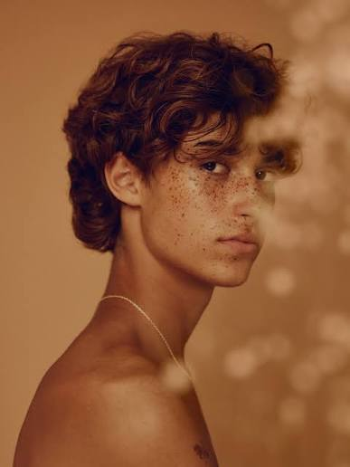
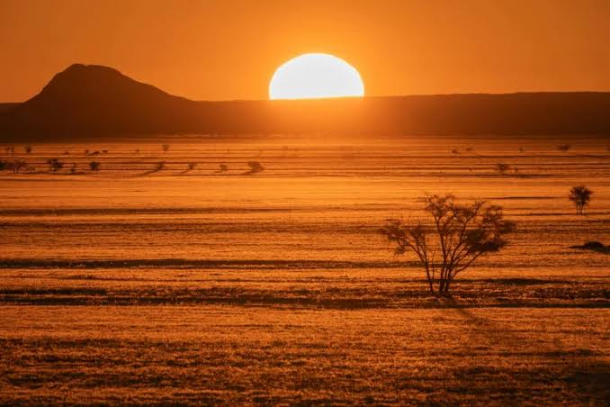
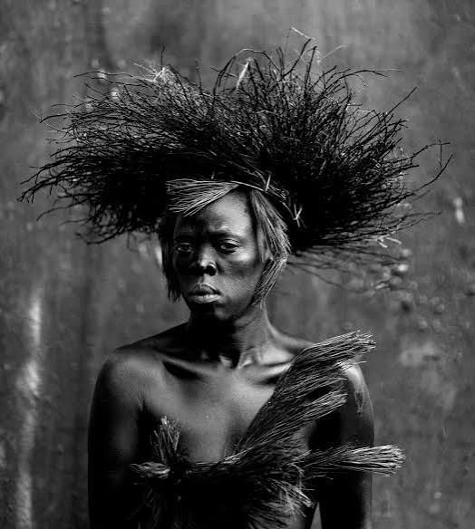
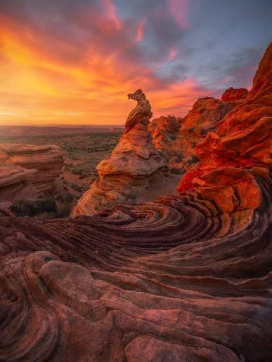
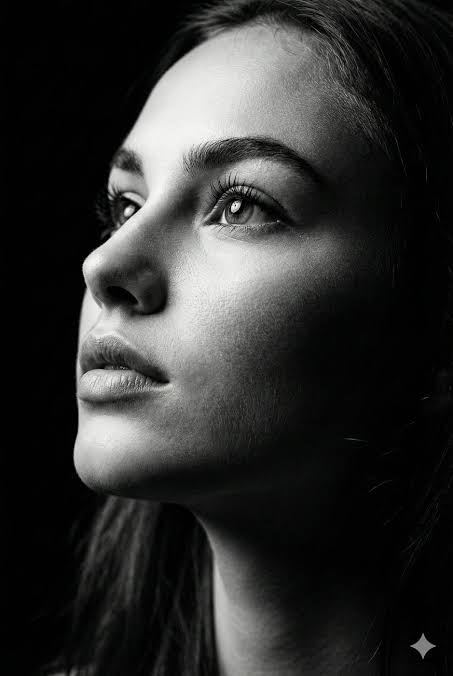

Title: The Pantheon
Category Tag: Architecture
Description: The Pantheon in Rome at sunrise. Its grey granite columns and triangular pediment fill the frame, with the inscription "M·AGRIPPA·L·F·COS·TERTIVM·FECIT" carved across the frieze. The brick rotunda curves away behind, and the piazza's cobblestones sit empty in warm early light, with pastel buildings and a soft pink-and-blue sky framing either side.

Title: Rocky Arctic Coast
Category: Landscape
Description: A night scene on a rocky Arctic coast. Green aurora borealis sweeps in ribbons across a starry sky, with a bright moon low on the left. Snow-dusted mountains rise steeply behind dark water, and the foreground rocks and shallow tidal pools catch a green reflection of the lights.

Title: Eyes Closed
Category: Portrait
Description: A night scene on a rocky Arctic coast. Green aurora borealis sweeps in ribbons across a starry sky, with a bright moon low on the left. Snow-dusted mountains rise steeply behind dark water, and the foreground rocks and shallow tidal pools catch a green reflection of the lights.

Title: The Heydar Aliyev Center
Category: Architecture
Description: The Heydar Aliyev Center in Baku: a sweeping white building with no straight lines, its curving shell folding into a tall arch and a wave-like roofline. Dark glass fills the openings beneath the white skin. A few tiny figures cross the pale plaza in front, and apartment blocks sit low on the horizon under a clear, bright sky.

Title: Plitvice Lakes
Category: Landscape
Description: A wide waterfall complex in a forested gorge, likely Plitvice Lakes. Multiple white curtains of water pour over mossy limestone cliffs into turquoise pools below, with mist rising in the centre. Autumn foliage — greens, golds, and oranges — covers the slopes on both sides, and grey rock faces show through the trees.

Title: Tousled Young
Category: Portait
Description: A close-up profile portrait of a young man with tousled curly brown hair and a heavy scattering of freckles across his nose and cheeks. He's bare-shouldered with a thin silver chain, looking off past the camera with a calm, slightly distant expression. The whole image is bathed in warm amber light, with soft out-of-focus foliage or bokeh drifting across the right side.

Title: Modern Single
Category: Architecture
Description: A low, single-storey modern house with a flat black roof and walls that are almost entirely glass. Warm interior light glows through the windows, showing a dining table and a lit room beyond. Wide wooden steps lead up to the entrance, and the foreground is a bed of pale gravel with two dark boulders. Yellow and green maple foliage frames the top and sides, so the house sits inside the garden rather than beside it.

Title: Plain Sunrise
Category: Landscape
Description: A desert or savanna plain at sunrise, everything steeped in deep orange light. A huge white sun sits half above the horizon, just right of a dark, rounded hill on the left. The flat ground shows faint horizontal bands of dry grass and scrub, and a single small tree stands silhouetted in the lower right.

Title: A Sharp Gaze
Category: Portrait
Description: A black-and-white portrait of a person facing the camera with a steady, serious gaze. They wear a large headdress of fine, spiky fibres radiating outward like a burst of dark grass, and a garment of similar stiff fibre strands across the chest and shoulder. Bare shoulders, dark skin, and a plain, textured grey backdrop keep all the attention on the face and the headdress silhouette.

Title: A Grand Manor
Category: Architecture
Description: A grand Elizabethan manor of warm honey-coloured stone, seen from the lawn in low golden evening light. Three ornate towers with carved crests rise above a long facade of tall mullioned windows. A wide, flat-topped tree stands left of centre on manicured grass, with clipped hedges and shrubs along the front, and a blue gate at the far right.

Title: Sunset Formations
Category: Landscape
Description: Sandstone formations at sunset, dominated by swirling, layered rock in the foreground that curves like carved ribbons in deep reds, purples and mauve. A slender hoodoo stands on a ridge at centre, catching the light, with a wider banded cliff to the right. The sky above is a dramatic wash of orange and pink cloud over a flat, hazy plain.

Title: Up, up and Away
Category: Portrait
Description: A black-and-white close-up of a woman in three-quarter profile, her face lifted and eyes looking up and away. Strong side light from the left carves out her cheekbone, brow and jaw while the rest falls into deep shadow against a black background. Her expression is calm and distant, with fine detail in the lashes, brow and lips.